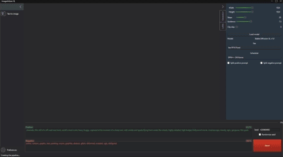
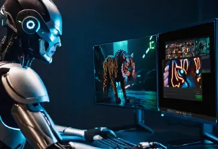
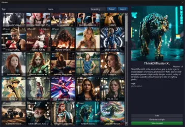
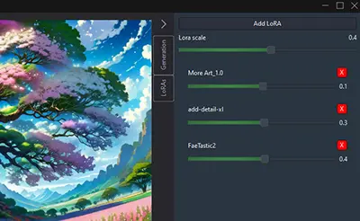

Image Artisan XL is the ultimate desktop application for creating amazing images with the power of artificial intelligence.

With Image Artisan XL, you can unleash your creativity and generate new images from scratch using simple text prompts. Whether you want to create realistic landscapes, fantasy creatures, abstract art, or anything else you can imagine.
Image Arisan XL it's completely free and open source.
Powered by Stable Diffusion XL and Diffusers
What Makes Image Artisan XL Unique
- Desktop Application: Unlike many image generation tools that run on web browsers, Image Artisan XL is a desktop application.
- Easy Installation: Image Artisan XL is easy to install. Just a few clicks and you're ready to start creating!
- Zoom In and Out: Easily zoom in and out of your creations for detailed editing and a better view.
- Second Monitor Preview: Use a second monitor to preview your work in real-time as you make edits.
- Fast Model Gallery with Filters and Search: Quickly find the models you need with our fast model gallery. Use filters and search functionality to narrow down your options.
- Easy Drag and Drop of Images and Models: Simply drag and drop images and models into the application to start working with them.
- Easy Share of Models and LoRAs: Includes preview image, tags, triggers, and example generations. No additional files needed.




Current Features
- Text to Image Generation: Transform your text prompts into stunning images.
- Preview All Steps of the Generation: Watch your image come to life step by step.
- Model Gallery: Supports Stable Diffusion XL, Segmind Stable Diffusion 1B, and Latent Consistency Models.
- Combine Multiple LoRAs: Use different scales and a global scale for all of them.
- CPU Offloading: Perfect for GPUs with low video RAM.
- Weighted Prompts: Prioritize certain aspects of your image with weighted prompts.
- No Automatic Saving of Generations: You choose which image to save. Auto save feature available.
- Continuous Generation: Keep generating new images without interruption.
- Keyboard Shortcuts: Speed up your workflow with handy keyboard shortcuts.
Download Image Artisan XL
Ready to start creating? Download Image Artisan XL now!
Please note: Currently, only the Windows installer is available. Stay tuned for more platform support in the future.